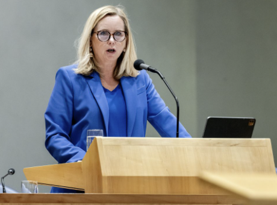

NSC-leider Omtzigt per direct terug in de Kamer, maar nog niet full time
 Hier komt een stukje tekst vanuit NOS zelf.
Hier komt een stukje tekst vanuit NOS zelf.
Trump zal in het Midden-Oosten opschudding veroorzaken, zoveel is zeker

Discussie over herstel koppeling groei en ontwikkelingshulp gaat door
